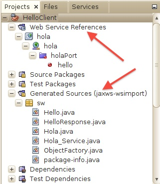
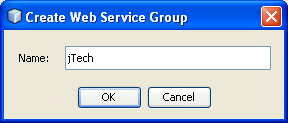

Introducción a los Servicios Web. Invocación de servicios web SOAP.
- ¿Qué es un Servicio Web?
- Características de los Servicios Web
- Tipos de servicios Web
- Arquitectura de los Servicios Web
- Servicios Web SOAP y Java EE
- Tecnologías básicas para Servicios Web
- Interoperabilidad de los WS: Metro y JAX-WS
- Los servicios Web desde la vista del Cliente
- Ficheros WSDL y de esquema con Netbeans
- Tipos de acceso para invocar servicios Web JAX-WS
- Invocación de servicios web JAX-WS con JDK 1.6
- Invocación de servicios web JAX-WS desde una clase Java con Maven
- Invocación de servicios web JAX-WS desde una aplicación Web con Maven
- Invocación de servicios web con Netbeans
- Gestor de servicios web de Netbeans
- Interfaz de invocación dinámica (DII)
El diseño del software tiende a ser cada vez más modular. Las aplicaciones se componen de una serie de componentes (servicios) reutilizables, que pueden encontrarse distribuidos a lo largo de una serie de máquinas conectadas en red.
Los Servicios Web nos permitirán distribuir nuestra aplicación a través de Internet, pudiendo una aplicación utilizar los servicios ofrecidos por cualquier servidor conectado a Internet. La cuestión clave cuando hablamos de servicios Web es la interoperabilidad entre las aplicaciones.
¿Qué es un Servicio Web?
Un Servicio Web es un componente al que podemos acceder mediante protocolos Web estándar, utilizando XML para el intercambio de información.
Normalmente nos referimos con Servicio Web a una colección de procedimientos (métodos) a los que podemos llamar desde cualquier lugar de Internet o de nuestra intranet, siendo este mecanismo de invocación totalmente independiente de la plataforma que utilicemos y del lenguaje de programación en el que se haya implementado internamente el servicio.
Cuando conectamos con un servidor web desde nuestro navegador, el servidor nos devuelve la página web solicitada, que es un documento que se mostrará en el navegador para que lo visualice el usuario, pero es difícilmente entendible por una máquina. Podemos ver esto como web para humanos. En contraposición, los Servicios Web ofrecen información con un formato estándar que puede ser entendido fácilmente por una aplicación. En este caso estaríamos ante una web para máquinas.
Los servicios Web son componentes de aplicaciones distribuidas que están disponibles de forma externa. Se pueden utilizar para integrar aplicaciones escritas en diferentes lenguajes y que se ejecutan en plataformas diferentes. Los servicios Web son independientes de lenguaje y de la plataforma gracias a que los vendedores han admitido estándares comunes de Servicios Web.
El WC3 (World Wide Web Consortium) define un servicio Web como un sistema software diseñado para soportar interacciones máquina a máquina a través de la red. Dicho de otro modo, los servicios Web proporcionan una forma estandar de interoperar entre aplicaciones software que se ejecutan en diferentes plataformas. Por lo tanto, su principal característica su gran interoperabilidad y extensibilidad así como por proporcionar información fácilmente procesable por las máquinas gracias al uso de XML. Los servicios Web pueden combinarse con muy bajo acoplamiento para conseguir la realización de operaciones complejas. De esta forma, las aplicaciones que proporcionan servicios simples pueden interactuar con otras para "entregar" servicios sofisticados añadidos.
Características de los Servicios Web
Las características deseables de un Servicio Web son:
- Un servicio debe poder ser accesible a través de la Web. Para ello debe utilizar protocolos de transporte estándares como HTTP, y codificar los mensajes en un lenguaje estándar que pueda conocer cualquier cliente que quiera utilizar el servicio.
- Un servicio debe contener una descripción de sí mismo. De esta forma, una aplicación podrá saber cuál es la función de un determinado Servicio Web, y cuál es su interfaz, de manera que pueda ser utilizado de forma automática por cualquier aplicación, sin la intervención del usuario.
- Debe poder ser localizado. Deberemos tener algún mecanismo que nos permita encontrar un Servicio Web que realice una determinada función. De esta forma tendremos la posibilidad de que una aplicación localice el servicio que necesite de forma automática, sin tener que conocerlo previamente el usuario.
Tipos de servicios Web
A nivel conceptual, un servicio es un componente software proporcionado a través de un endpoint accesible a través de la red. Los servicios productores y consumidores utilizan mensajes para intercambiar información de invocaciones de petición y respuesta en forma de documentos auto-contenidos que hacen muy pocas asunciones sobre las capacidades tecnológicas de cada uno de los receptores.
A nivel técnico, los servicios pueden implementarse de varias formas. En este sentido, podemos distinguir dos tipos de servicios Web: los denominados servicios Web "grandes" ("big" Web Services), los llamaremos servicios Web SOAP, y servicios Web RESTful.
Servicios Web SOAP
Los servicios Web SOAP, o servicios Web "big", utilizan mensajes XML para intercomunicarse que siguen el estándar SOAP (Simple Object Access Protocol), un lenguaje XML que define la arquitectura y formato de los mensajes. Dichos sistemas normalmente contienen una descripción legible por la máquina de la descripción de las operaciones ofrecidas por el servicio, escrita en WSDL (Web Services Description Language), que es un lenguaje basado en XML para definir las interfaces sintácticamente.
El formato de mensaje SOAP y el lenguaje de definición de interfaces WSDL se ha extendido bastante, y muchas herramientas de desarrollo, por ejemplo Netbeans, pueden reducir la complejidad de desarrollar aplicaciones de servicios Web.
El diseño de un servicio basado en SOAP debe establecer un contrato formal para describir la interfaz que ofrece el servicio Web. WSDL puede utilizarse para describir los detalles del contrato, que pueden incluir mensajes, operaciones, bindings, y la localización del servicio Web. También deben tenerse en cuenta los requermientos no funcionales, como por ejemplo las transacciones, necesidad de mantener el estado (addressing), seguridad y coordinación
En este módulo vamos a hablar únicamente en los Servicios Web SOAP.
Servicios Web RESTful
Los servicios Web RESTful (Representational State Transfer Web Services) son adecuados para escenarios de integración básicos ad-hoc. Dichos servicios Web se suelen integrar mejor con HTTP que los servicios basado en SOAP, ya que no requieren mensajes XML o definciones del servicio en forma de fichero WSDL
Los servicios Web REST utilizan estándares muy conocidos como HTTP, SML, URI, MIME, y tienen una infraestructura "ligera" que permite que los servicios se construyan utilizando herramientas de forma mínima. Gracias a ello, el desarrollo de servicios RESTful es barato y tiene muy pocas "barreras" para su adopción.
Arquitectura de los Servicios Web
Los servicios Web presentan una arquitectura orientada a servicios que permite crear una definición abstracta de un servicio, proporcionar una implementación concreta de dicho servicio, publicar y localizar un servicio, seleccionar un instancia de un servicio, y utilizar dicho servicio con una elevada interoperabilidad. Es posible desacoplar la implementación del servicio Web y su uso por parte de un cliente. También es posible desacoplar la implementación del servicio y de cliente. Las implementaciones concretas del servicio pueden desacoplarse a nivel de lógica y transporte. La siguiente figura muestra el diagrama de una arquitectura orientada a servicios.
El proveedor del servicio define la descripción abstracta de dicho servicio utilizando un lenguaje de descripción de Servicios Web (WSDL: Web Services Description Language: ). A continuación se crea un Servicio concreto a partir de la descripción abstracta del servicio, produciendo así una descripción concreta del servicio en WSDL. Dicha descripción concreta puede entonces publicarse en un servicio de registro como por ejemplo UDDI (Universal Description, Descovery and Integration). Un cliente de un servicio puede utilizar un servicio de registro para localizar una descripción de un servicio, a partir de la cual podrá seleccionar y utilizar una implementación concreta de dicho servicio.
La descripción abstracta se define en un documento WSDL como un PortType. Una instancia concreta de un Servicio se define mediante un elemento port de un WSDL (consistente a su vez en una combinación de un PortType, un binding de codificación y transporte, más una dirección). Un conjunto de ports definen un elemento service de un WSDL.
Servicios Web SOAP y Java EE
Como ya se ha dicho, en este módulo vamos a centrarnos en los servicios Web SOAP. Aunque no existe una definición comúnmente aceptada para este tipo de servicios, utilizaremos la siguiente extraida de la especificación JSR-109 (Implementing Web Services), que define el modelo de programación y arquitectura del soporte de ejecución (run-time) para implementar servicios Web en Java.
Definición de Servicio Web:
Un servicio Web es un componente con las siguientes características:
- Implementa los métodos de una interfaz descrita mediante un WSDL. Dichos métodos se implementan utilizando un EJB de sesión de tipo Stateless/Singleton o bien un componente web JAX-WS
- Un servicio Web puede tener publicada su interfaz en uno o más "registros" durante su despliegue
- La implementación de un Servicio Web, la cual utiliza solamente la funcionalidad descrita por su especificación, puede desplegarse en cualquier servidor de aplicaciones que cumple con las especificaciones Java EE
- Los servicios requeridos en tiempo de ejecución (run-time), tales como atributos de seguridad, se separan de la implementación del servicio. Se utilizarán herramientas adicionales que pueden definir dichos requerimientos durante el ensamblado o despliegue
- Un contenedor actúa como mediador para acceder al servicio
La especificación de Java EE para servicios Web define una serie de relaciones arquitectónicas requeridas para dichos servicios, que mostramos en la siguiente figura. Se trata de relaciones lógicas que no imponen requerimiento alguno para el proveedor del contenedor sobre cómo estructurar los contenedores y los procesos. Como añadido para la plataforma Java EE se incluye un componente port que depende de la funcionalidad de contenedor proporcionada por los contenedores web y EJB, y del transporte SOAP/HTTP.
Los servicios Web para Java EE requieren que un componente Port pueda ser referenciado desde un cliente, así como desde los contenedores web y EJB. No se requiere que haya un Port accesible desde un contenedor de applets.
Los servicios Web para Java EE pueden implementarse de dos formas: como una clase Java que se ejecuta en un contenedor Web (según el modelo de programació definido en JAX-WS, y que veremos más adelante), o como un EJB de sesión stateless o singleton en un contenedor EJB.
El contenedor del servicio Web debe proporcionar la gestión del ciclo de vida de la implementación del servicio, además de proporcionar soporte adicional para la gestión de concurrencia de la invocación de los métodos del servicio, y soporte para la seguridad.
Tecnologías básicas para Servicios Web
Tenemos una serie de tecnologías, todas ellas basadas en XML, que son fundamentales para el desarrollo de Servicios Web. Estas tecnologías son independientes tanto del SO como del lenguaje de programación utilizado para implementar dichos servicios. Por lo tanto, serán utilizadas para cualquier Servicio Web, independientemente de la plataforma sobre la que construyamos dichos servicios (como puede ser J2EE o .NET).
Los protocolos utilizados en los Servicios Web se organizan en una serie de capas:
| Capa | Descripción | |
| Transporte de servicios | Es la capa que se encarga de transportar los mensajes entre aplicaciones. Normalmente se utiliza el protocolo HTTP para este transporte, aunque los servicios web pueden viajar mediante otros protocolos de transferencia de hipertexto como SMTP, FTP o BEEP. | |
| Mensajería XML | Es la capa responsable de codificar los mensajes en XML de forma que puedan ser entendidos por cualquier aplicación. Puede implementar los protocolos XML-RPC o SOAP. | |
| Descripción de servicios | Se encarga de definir la interfaz pública de un determinado servicio. Está definición se realiza mediante WSDL. | |
| Localización de servicios | Se encarga del registro centralizado de servicios, permitiendo que estos sean anunciados y localizados. Para ello se utiliza el protocolo UDDI. | |
A continuación vamos a hablar con un poco más de detalle sobre las tecnologías de mensajería, descripción de servicios y localización. Más concretamente nos referimos a SOAP, WSDL y UDDI.
SOAP
Se trata de un protocolo derivado de XML que nos sirve para intercambiar información entre aplicaciones.
Normalmente utilizaremos SOAP para conectarnos a un servicio e invocar métodos remotos, aunque puede ser utilizado de forma más genérica para enviar cualquier tipo de contenido. Podemos distinguir dos tipos de mensajes según su contenido:
- Mensajes orientados al documento: Contienen cualquier tipo de contenido que queramos enviar entre aplicaciones.
- Mensajes orientados a RPC: Este tipo de mensajes servirá para invocar procedimientos de forma remota (Remote Procedure Calls). Podemos verlo como un tipo más concreto dentro del tipo anterior, ya que en este caso como contenido del mensaje especificaremos el método que queremos invocar junto a los parámetros que le pasamos, y el servidor nos deberá devolver como respuesta un mensaje SOAP con el resultado de invocar el método.
Puede ser utilizado sobre varios protocolos de transporte, aunque está especialmente diseñado para trabajar sobre HTTP.
Dentro del mensaje SOAP podemos distinguir los siguientes elementos:

- Un sobre (Envelope), que describe el mensaje, a quien va dirigido, y cómo debe ser procesado. El sobre incluye las definiciones de tipos que se usarán en el documento. Contiene una cabecera de forma opcional, y el cuerpo del mensaje.
- Una cabecera (Header) opcional, donde podemos incluir información sobre el mensaje. Por ejemplo, podemos especificar si el mensaje es obligatorio (debe ser entendido de forma obligatoria por el destinatario), e indicar los actores (lugares por donde ha pasado el mensaje).
- El cuerpo del mensaje (Body), que contiene el mensaje en si. En el caso de los mensajes RPC se define una convención sobre como debe ser este contenido, en el que se especificará el método al que se invoca y los valores que se pasan como parámetros. Puede contener un error de forma opcional.
- Un error (Fault) en el cuerpo del mensaje de forma opcional. Nos servirá para indicar en una respuesta SOAP que ha habido un error en el procesamiento del mensaje de petición que mandamos.
Hemos visto como los mensajes SOAP nos sirven para intercambiar cualquier documento XML entre aplicaciones. Pero puede ocurrir que necesitemos enviar en el mensaje datos que no son XML, como puede ser una imagen. En ese caso tendremos que recurrir a la especificación de mensajes SOAP con anexos.
Los mensajes SOAP con anexos añaden un elemento más al mensaje:

- El anexo (Attachment), puede contener cualquier tipo de contenido (incluido el XML). De esta forma podremos enviar cualquier tipo de contenido junto a un mensaje SOAP.
Nuestro mensaje podrá contener tantos anexos como queramos.
Un ejemplo de mensaje SOAP es el siguiente:
<SOAP-ENV:Envelope
xmlns:SOAP-ENV="http://schemas.xmlsoap.org/soap/envelope/"
SOAP-ENV:encodingStyle="http://schemas.xmlsoap.org/soap/encoding/">
<SOAP-ENV:Body>
<ns:getTemperatura xmlns:ns="http://j2ee.ua.es/ns">
<area>Alicante</area>
</ns:getTemperatura>
</SOAP-ENV:Body>
</SOAP-ENV:Envelope>
En él estamos llamando a nuestro método getTemperatura para obtener información meteorológica, proporcionando como parámetro el área de la que queremos obtener la temperatura.
Podemos encontrar la especificación de SOAP y SOAP con anexos publicada en la página del W3C, en las direcciones http://www.w3.org/TR/SOAP/ y http://www.w3.org/TR/SOAP-attachments respectivamente.
WSDL
WSDL (Web Services Description Language) es un lenguaje basado en XML utilizado para describir la funcionalidad que proporciona un servicio Web. Una descripción WSDL (fichero WSDL) de un servicio web proporciona una descripción entendible por la máquina (machine readable) de la interfaz del servicio Web, indicando cómo se debe llamar al servicio, qué parámetros espera, y qué estructuras de datos devuelve.
La versión actual de WSDL es la 2.0, en la que se ha cambiado el significado de la D por Definition. La nueva versión plantea cambios de nomenclatura y estructura del fichero xml que contiene la descripción del servicio. En este módulo vamos a utilizar la versión anterior, la 1.1, puesto que es la que está soportada actualmente por Netbeans, así como por BPEL, que estudiaremos más adelante. En la figura siguiente mostramos la estructura que siguen los ficheros WSDL en ambas versiones, en donde podemos observar el cambio de nomenclatura en la versión 2.0.
WSDL describe un servicio utilizando varios elementos (etiquetas xml). Dichos elementos podemos clasificarlos como abstractos o concretos.La parte WSDL abstracta describe las operaciones y mensajes con detalle. En otras palabras, la parte abstracta de un WSDL especifica QUÉ hace el servicio:
- Qué operaciones están disponibles
- Qué entradas, salidas, y mensajes de error tienen las operaciones
- Cuáles son las definiciones de los tipos para los mensajes de entrada, salida y error
En el mundo Java, podemos pensar en la parte abstracta de un WSDL como en la definición de una interfaz o una clase abstracta, con la definición de sus métodos, pero no sus implementaciones. La parte abstracta de un WSDL contiene dos componentes principales:
- Las operaciones que forman la definición de la interfaz
- Los tipos de datos para los parámetros de entrada, salida y error, de las operaciones
La parte WSDL concreta describe el cómo y dónde del servicio:
- Cómo tiene que llamar un cliente al servicio
- Qué protocolo debería usar
- Dónde está disponible el servicio
En el mundo Java podemos pensar en la parte concreta de un WSDL como en la implementación de la parte abstracta, aunque en términos de servicios Web, solamente describe dónde se encuentra dicha implementación para utilizarse. La parte concreta de un WSDL contiene dos componentes principales:
- Información de enlazado (binding) sobre el protocolo a utilizar
- La dirección en donde localizar el servicio
Vamos a ver con un poco más de detalle los elementos WSDL (tanto la parte abstracta como la concreta):
- definitions: Es el elemento raiz y permite especificar el espacio de nombres del documento target namespace, el nombre, y otros prefijos utilizados en el documento WSDL. Un ejemplo de definición de prefijo es: xmlns:wsdl="http://schemas.xmlsoap.org/wsdl/". Este prefijo especifica que todos los elementos dentro del documento de esquemas con el target namespace "http://schemas.xmlsoap.org/wsdl/" tendrán el prefijo wsdl.
- types: Se utiliza para definir los tipos de datos que se intercambiarán en el mensaje. Podemos definir dichos tipos directamente dentro de este elemento, o importar la definición de un fichero de esquema (fichero xsd). La definición de tipos puede verse como las definiciones Java de clase, con variables que pueden ser tipos primitivos o referencias a otras clases u objetos. Los tipos primitivos se definen en los espacios de nombres del Schema y normalmente nos referimos a ellos como built-in types. Éstos incluyen tipos simples tales como string, int, double,...
- message: Define los distintos mensajes que se intercambiaran durante el proceso de invocación del servicio. Se deberán definir los mensajes de entrada y salida para cada operación que ofrezca el servicio. Los mensajes muestran descripciones abstractas de los datos que se van a intercambiar.
- portType: Contiene una colección de una o más operaciones. Para cada operación indica cuáles son los mensajes de entrada y salida, utilizando para ello los mensajes definidos en el apartado anterior. Los portTypes son, por lo tanto, colecciones abstractas de operaciones soportadas por un servicio
- binding: Indica el protocolo de red y el formato de los datos para las operaciones de un portType. Los bindings son definiciones concretas de los portTypes. Un portType puede tener múltiples bindings asociados. El formato de datos utilizado para los mensaje de las operaciones del portType puede ser orientado al documento u orientado a RPC. Si es orientado al documento tanto el mensaje de entrada como el de salida contendrán un documento XML. Si es orientado a RPC el mensaje de entrada contendrá el método invocado y sus parámetros, y el de salida el resultado de invocar dicho método, siguiendo una estructura más restrictiva.
- service: Define el servicio como una colección de elementos port a los que se puede acceder. Un port se define asociando una dirección de red con un binding, de los definidos en el documento. Dicha dirección de red es la dirección (URL) donde el servicio actúa, y por lo tanto, será la dirección a la que las aplicaciones deberán conectarse para acceder al servicio.
Un documento WSDL de ejemplo es el siguiente:
<?xml version="1.0" encoding="utf-8"?>
<definitions targetNamespace="http://jaxwsHelloServer/" name="HelloService">
<types>
<xsd:schema>
<xsd:import namespace="http://jaxwsHelloServer/"
schemaLocation=
"http://localhost:8080/JAXWSHelloAppServer/jaxwsHello?xsd=1"/>
</xsd:schema>
</types>
<message name="sayHello">
<part name="parameters" element="tns:sayHello"/>
</message>
<message name="sayHelloResponse">
<part name="parameters" element="tns:sayHelloResponse"/>
</message>
<portType name="Hello">
<operation name="sayHello">
<input wsam:Action="http://jaxwsHelloServer/Hello/sayHelloRequest"
message="tns:sayHello"/>
<output wsam:Action=
"http://jaxwsHelloServer/Hello/sayHelloResponse"
message="tns:sayHelloResponse"/>
</operation>
</portType>
<binding name="HelloPortBinding" type="tns:Hello">
<soap:binding transport="http://schemas.xmlsoap.org/soap/http"
style="document"/>
<operation name="sayHello">
<soap:operation soapAction=""/>
<input>
<soap:body use="literal"/>
</input>
<output>
<soap:body use="literal"/>
</output>
</operation>
</binding>
<service name="HelloService">
<port name="HelloPort" binding="tns:HelloPortBinding">
<soap:address location=
"http://localhost:8080/JAXWSHelloAppServer/jaxwsHello"/>
</port>
</service>
</definitions>
En este ejemplo se define un servicio, denominado HelloService. Dicho servicio está formado por el port HelloPort, al cual se accede con protocolo http (binding transport=http) y con mensajería soap con estilo document (binding style=document). Dicho port proporciona la operación (funcionalidad) sayHello (operation name= "sayHello"). Dicha operación utiliza la codificación literal en los mensajes de entrada y salida (body use= "literal"). Esto es lo que se conoce como operación de tipo document/literal.
El elemento portType define la operación sayHello a partir de los mensajes de entrada y salida que la componen.
En los elementos message vemos la descripción de los mensajes de entrada y salida de la operación sayHello. El mensaje de entrada contiene un dato de tipo "tns:sayHello", y el de salida es de tipo "tns:sayHelloResponse" (la cadena de saludo devuelta por el servicio). La definición de los tipos se encuentra en el fichero de esquema referenciado por la propiedad schemaLocation en una sub-etiqueta de <types>
Podemos encontrar la especificación de WSDL 1.1 publicada en la página del W3C, en la dirección http://www.w3.org/TR/wsdl.
UDDI
UDDI nos permite localizar Servicios Web. Para ello define la especificación para construir un directorio distribuido de Servicios Web, donde los datos se almacenan en XML. En este registro no sólo se almacena información sobre servicios, sino también sobre las organizaciones que los proporcionan, la categoría en la que se encuentran, y sus instrucciones de uso (normalmente WSDL). Tenemos por lo tanto 3 tipos de información relacionados entre sí:
- Páginas blancas: Datos de las organizaciones (dirección, información de contacto, etc).
- Páginas amarillas: Clasificación de las organizaciones (según tipo de industria, zona geográfica, etc).
- Páginas verdes: Información técnica sobre los servicios que se ofrecen. Aquí se dan las instrucciones para utilizar los servicios. Es recomendable que estas instrucciones se especifiquen de forma estándar mediante un documento WSDL.
Además, UDDI define una API para trabajar con dicho registro, que nos permitirá buscar datos almacenados en él, y publicar datos nuevos.
De esta forma, una aplicación podrá anunciar sus servicios en un registro UDDI, o bien localizar servicios que necesitemos mediante este registro.
Esta capacidad de localizar servicios en tiempo de ejecución, y de que una aplicación pueda saber cómo utilizarlo inmediatamente gracias a la descripción del servicio, nos permitirá realizar una integración débilmente acoplada de nuestra aplicación.
La interfaz de UDDI está basada en SOAP. Para acceder al registro se utilizarán mensajes SOAP, que son transportados mediante protocolo HTTP.
Podemos encontrar la especificación de UDDI, documentación, y más información en la dirección http://uddi.xml.org/.
Estos registros se utilizan normalmente de forma interna en organizaciones para tener un directorio organizado de servicios. Podemos encontrar varios registros proporcionados por diferentes proveedores. Destacamos jUDDI, un registro open-source de Apache. Este registro consiste en una aplicación web Java que puede instalarse en cualquier servidor con soporte para este tipo de aplicaciones, como puede ser Tomcat, y una base de datos, que podrá ser instalada en diferentes SGBD (MySQL, Postgres, Oracle, etc).
Interoperabilidad de los WS: Metro y JAX-WS
La interoperabilidad de los servicios Web constituye una iniciativa de Sun y Microsoft. El principal objetivo es proporcionar productos que sean capaces de interoperar a través de diferentes plataformas.
Metro (http://metro.java.net) es el producto resultante de la iniciativa de Sun para la interoperabilidad de los servicios Web utilizando la plataforma Java. De igual forma WCF (Windows Communication Foundation) es la aportación de Microsoft para la plataforma .NET.
Metro, por lo tanto, constituye la implementación por parte de Sun, de la pila (colección de tecnologías) de servicios Web (web service stack). La versión actual es la 2.1.1 y está formada por tres componentes principales, que podemos ver en la figura que se adjunta:
- Metro/WSIT 2.1.1: WSIT es un conjunto de tecnologías (Web Services Interoperabe Technologies) que permiten la interoperabilidad con .NET. A nivel de transporte, Metro permite utilizar HTTP, MTOM, SOAP/TCP. También proporciona fiabilidad en el envío de mensajes (Reliability), implementando las especificaciones WS-ReliableMessaging. Asímismo Metro permite habilitar el uso de transacciones atómicas, para lo cual proporciona una implementación de las especificaciones WS-Coordination y WS-Atomic Transaction. La seguridad también está contemplada en Metro mediante la implementación de las especificaciones WS-Security y WS-Trust. Bootstrapping: WSDL; WS-Policy; WS-MetadataExange
- JAX-WS RI 2.2.5: Es la implementación de referencia del estándar JAX-WS (especificación JSR 224: Java API for XML-Based Web Services). Proporciona las características básicas para la interoperabilidad de los servicios Web (WS-I Basic Profile: mensajería SOAP, WSDL, publicación de servicios en UDDI; WS-I Attachment Profile: utilización de SOAP con anexos; WS-I Addressing: utilización de espacios de nombres y ficheros de esquema)
- JAXB RI 2.2.4-1: Implementación de referencia del API para la capa de enlazado de datos (JAXB: Java Architecture for XML binding)
Con JAX-WS, una invocación de una operación a un servicio web se representa con un protocolo basado en XML, como por ejemplo SOAP. La especificación SOAP define la estructura del "envoltorio" (envelope) del mensaje, reglas de codificación, y convenciones para representar invocaciones y respuestas del servicio web. Estas llamadas y respuestas son transmitidas como mensajes SOAP (ficheros XML) a través de HTTP.
Si bien los mensajes SOAP son complejos, la API JAX-WS oculta esta complejidad al desarrollador de la aplicación. En la parte del servidor, el desarrollador especifica las operaciones del servicio web definiendo métodos en una interfaz escrita en lenguaje Java. El desarrollador también codifica una o más clases que implementan dichos métodos. Los programas cliente también son fáciles de codificar. Un cliente crea un proxy (un objeto local que representa el servicio) y a continuación simplemente invoca los métodos sobre el proxy. Con JAX-WS, el desarrollador no necesita generar o "parsear" mensajes SOAP. El runtime de JAX-WS convierte las llamadas y respuestas del API en y desde los mensajes SOAP.
La siguiente figura muestra la interacción entre un cliente y un servicio web a través de JAX-WS.
Metro (y consecuentemente, JAX-WS)está incluido en Glassfish 3.x por defecto, por lo que haremos uso de él para implementar nuestros Servicios Web y clientes correspondientes.
Los servicios Web desde la vista del Cliente
La vista del cliente de un servicio Web es bastante similar a la de un Enterprise JavaBean. Un cliente de un servicio Web puede ser otro servicio Web, un componente Java EE (componente web,componente EJB), incluyendo una aplicacion cliente Java EE, o una aplicación Java arbitraria. Una aplicación no Java o un servicio Web para una aplicación no Java EE también podrían ser clientes de un Servicio Web, pero vamos a ceñirnos a la plataforma Java EE.
El cliente de un servicio Web puede ser remoto (no se requiere que resida en la misma máquina que el servicio Web) y se proporciona una total transparencia al respecto (el cliente no puede distinguir si está accediendo a un servidor local o remoto).
La siguiente figura ilustra la vista del cliente de un servicio Web, proporcionada por el proveedor del componente Port y el contenedor en el que éste reside. Además se incluye la clase/interfaz Service (SI: Service Interface), y la interfaz del Endpoint del servicio (SEI: Service Endpoint Interface).

La clase/interfaz Service (SI) define los métodos que un cliente puede utilizar para acceder a un Port de un servicio Web. Un cliente NO crea o destruye un Port. Utiliza la clase/interfaz Service para obtener el acceso a un Port. La clase/interfaz Service se define en la especificación JAX-WS, pero su comportamiento viene definido en el documento WSDL proporcionado por el proveedor del servicio Web. Las herramientas de despliegue del contenedor proporcionan una implementación de los métodos de la clase/interfaz Service generada por JAX-WS.
El cliente accede a una implementación de un servicio Web utilizando el SEI. Dicho SEI es especificado por el proveedor del servicio. Las herramientas del despliegue y el run-time del contenedor proporciona las clases en la parte del servidor que van a atender las peticiones SOAP sobre la implementación de dicho servicio de los métodos especificados en el SEI.
Un Port no tiene identidad para el cliente, que lo debe considerar como un objeto sin estado.
JAX-WS define un modelo de programación en el que se realiza un mapeado de un documento WSDL a Java. Dicho mapaeado proporciona una factoría (Service) para seleccionar qué Port (agregado en el servicio) desea usar el cliente. Como veremos más adelante, la herramienta JAX-WS que porporciona las clases necesarias en la parte del cliente para poder acceder a un servicio web se denomina wsimport. En general, el transporte, codificación, y dirección del Port son transparentes para el cliente. El cliente sólamente necesita realizar llamadas sobre la interfaz del endpoint del servicio (Service Endpoint Interface), utilizando el PortType correspondiente para acceder a dicho servicio.
En esta sesión vamos a explicar el modelo de programación del cliente de un servicio Web utilizando JAX-WS, pero antes vamos a ver cómo trabajar con ficheros wsdl y ficheros de esquema con Netbeans.
Ficheros WSDL y de esquema con Netbeans
Saber "leer" y/o crear un fichero WSDL es importante para trabajar con servicios Web SOAP. Por ello vamos a ver cómo, de forma sencilla, se puede trabajar con ficheros WSDL y de esquema utilizando Netbeans
Cómo instalar el plugin en Netbeans para editar ficheros WSDL y xsd
Para instalar el plugin, lo haremos desde el menú de NetBeans. Para ello iremos a Tools->Plugins->Settings->Add. A continuación tenemos que proporcionar un nombre (para identificar el sitio que contiene los plugins, y añadirlo a la lista de sitios en donde NetBeans buscará actualizaciones de los plugins), y la URL del sitio desde el cual nos podemos descargar e instalar el plugin.
- Name: Deadlock.Netbeans.org
- URL: http://deadlock.netbeans.org/hudson/job/xml/lastSuccessfulBuild/ artifact/build/updates/updates.xml
A continuación pulsamos OK.
En la pestaña "Available Plugins", marcaremos "XML Tools", y procedemos a su instalación:
FICHEROS DE ESQUEMA
XML Schema es una recomendación del W3C, que proporciona mecanismos para definir la estructra, contenido y semántica de un documento XML. Un fichero WSDL utiliza el "lenguaje de esquemas" (XML Schema) para definir los tipos de datos y/o elementos utilizados por las operaciones de un servicio Web.
El bloque de construcción principal de un documento XML es element. La definición de un elemento element debe contener una propiedad name, que representa su nombre, y una propiedad type para indicar el tipo de elemento. Podemos utilizar alguno de los tipos predefinidos (built-in types), por ejemplo xs:string, xs:integer, o bien podemos definir nuevos tipos utilizando etiquetas simpleType o complexType.
Por ejemplo, podemos crear la siguiente definición del elemento Customer_Addres que representa la dirección de un cliente:
<xs:element name="CustomerAddress" type="xs:string"/>
Ahora podemos utilizar la definición anterior para expresar la estructura del siguiente mensaje de respuesta de nuestro servicio Web
<message name="msgResponse">
<part name="parameters" element="tns:CustomerAddress"/>
</message>
Según esto, un ejemplo de mensaje de respuesta por parte de nuestro servicio Web podría ser éste:
<Customer_address>Calle de los Pinos, 37</Customer_address>
En lugar de utilizar tipos primitivos, podemos definir nuevos tipos utilizando la etiqueta ComplexType (es un contenedor de elementos). Por ejemplo vamos a definir los tipos CustomerType y AddressType y el elemento Customer, la siguiente forma:
<xsd:element name="Customer" type="tns:CustomerType"/>
<xsd:complexType name="CustomerType">
<xsd:sequence>
<xsd:element name="Phone" type="xsd:integer"/>
<xsd:element name="Addresses" type="tns:AddressType"/>
</xsd:sequence>
</xsd:complexType>
<xsd:complexType name="AddressType">
<xsd:sequence>
<xsd:element name="Address1" type="xsd:string"/>
<xsd:element name="Address2" type="xsd:string"/>
</xsd:sequence>
</xsd:complexType>
Ahora podemos crear un segundo mensaje de respuesta en nuestro WSDL que haga uso del nuevo tipo CustomerInfo:
<message name="msgResponse2">
<part name="parameters" element="tns:Customer"/>
</message>
Un ejemplo de mensaje de respuesta con esta definición podría ser:
<Customer> <Phone>12345678</Phone> <Address1>Calle de los Pinos, 37</Address1> <Address2>Calle de los Manzanos, 25</Address2> </Customer>
Para crear ficheros de esquema desde Netbeans, tenemos que crear un nuevo fichero con extensión xsd. Con botón derecho, seleccionamos New->Other->XML->XML Schema. Debemos proporcionar un nombre para nuestro fichero .xsd, por ejemplo MiEsquema. Vamos explicar como crear, de forma visual, el esquema anterior.
El editor de ficheros de esquemas de Netbeans nos permite trabajar con tres vistas: la vista de fuentes (Source), en la que podemos trabajar directamente con xml, la vista de esquema (Schema): que nos muestra el contenido del fichero en forma de árbol, o en forma de "columnas", y la vista de diseño (Design). Esta última vista nos permite editar un fichero de esquema de forma visual, arrastrando componentes desde una paleta y editando sus propiedades, de forma que con unos cuantos "clicks" de ratón Netbeans genera el correspondiente código xml, que podemos ver en la vista de fuentes. Las tres vistas están sincronizadas en todo momento, de forma que los cambios en cualquiera de ellas, se reflejarán automáticamente en las otras dos.
Vamos a crear el tipo CustomerType. Para ello tendremos que "arrastrar" con el botón izquierdo del ratón el componente ComplexType desde la paleta de componentes de la derecha, y situarlo justo debajo de Complex Types, en el editor de diseño. Cuando nos situemos con el ratón en el lugar correcto, nos aparecerá una línea en negro y sólo entonces podremos "soltar" el dedo del ratón, y nos creará un nuevo elemento ComplexType en la vista de diseño. Vamos a ponerle el nombre CustomerType. Si seleccionamos el componente, haciendo doble "click" sobre el mismo podemos cambiar el nombre del componente. Si seleccionamos el componente y pulsamos botón derecho, nos aparece un menú, con la opción "Properties" con el que podemos borrar, añadir elementos,..., y editar las propiedades del componente en cualquier momento.
A continuación añadiremos un componente element a CustomerType, arrastrando dicho componente desde la paleta hasta situarnos sobre CustomerType antes de soltar el dedo del ratón. Llamaremos al nuevo elemento "Phone". Seguidamente, con el botón derecho, elegimos la opción "Properties" del menú contextual, y pinchamos sobre el botón con tres puntos correspondiente al ítem "Definition", y seleccionamos el tipo predefinido integer (dentro del grupo Built-In Types)
Repetimos los pasos anteriores para añadir un nuevo componente ComplexType al que llamaremos "AddressType", con los sub-elementos "Address1", y "Address2", ambas de tipo "string".
Para finalizar, crearemos un nuevo sub-elemento de "CustomerType", al que llamaremos "Addresses". En este caso, el tipo que asociaremos a dicho elemento será el tipo "AddressType", dentro del grupo "Complex Types"
El resultado final en la vista de diseño debe ser éste:
Si cambiamos a la vista de fuentes (Source) veremos lo siguiente:
FICHEROS WSDL
Ya hemos explicado el contenido de un fichero WSDL. Netbeans nos permite crear ficheros WSDL de forma "visual", simplificando de forma significativa el proceso de edición de la especificación WSDL de nuestro servicio web.
Para crear un fichero wsdl con NetBeans, activamos el menú contextual con el con botón derecho y seleccionamos New->Other->XML->WSDL Document. Podemos elegir entre crear un documento WSDL abstracto o concreto. En el primer caso solamente proporcionamos el portType y las operaciones que ofrece nuestro servicio. En el segundo caso, además, proporcionaremos la información de binding y tipo de codificación del servicio. La siguiente figura muestra la creación de un fichero wsdl concreto con nombre "conversion", y con un enlazado "SOAP", con codificación "Document/Literal".
El siguiente paso es determinar la configuración abstracta de nuestro WSDL. Tal y como se aprecia en la siguiente figura, se trata de indicar el nombre del portType, la operación que proporciona, así como el tipo de operación (elegiremos una operación síncrona, es decir, de tipo petición-respuesta (Request-Response)), y los mensajes de entrada, salida y situaciones excepcionales (Fault).
En un documento WSDL de tipo document/literal, utilizaremos un tipo XML predefinido, o bien de tipo <element> para las diferentes "partes" de los mensajes de entrada/salida/excepciones. En este último caso, tendremos que disponer de la definición del tipo en el fichero de esquema (fichero xsd) que asociaremos al documento WSDL. La siguiente figura muestra que los tipos "eurosType" y "ptasType" se encuentran definidos en el fichero "conversion.xsd"
Finalmente especificaremos la configuración concreta del WSDL, indicando el nombre de binding, así como el nombre del servicio y del port asociado.
En la siguiente sesión veremos que, a partir de un wsdl, podemos generar un servcio web.
Tipos de acceso para invocar servicios Web JAX-WS
Tenemos dos formas diferentes de invocar un Servicio Web utilizando JAX-WS (llamaremos servicios web JAX-WS a aquellos servicios que utilizan la librería JAX-WS):
-
Creación de un stub estático: Consiste en
generar una capa de stub por debajo del cliente de forma automática.
Dicho stub implementará la misma interfaz que el servicio,
lo cuál nos permitirá desde nuestro cliente acceder al Servicio
Web a través del stub tal y como si estuviéramos accediendo
directamente al servicio.
Para utilizar este mecanismo es recomendable contar con alguna herramienta dentro de nuestra plataforma que nos permita generar dicho stub, para no tener que encargarnos nosotros de realizar esta tarea manualmente.
-
Utilización de la Interfaz de Invocación Dinámica
(DII): Esta forma de acceso nos permitirá hacer llamadas a
procedimientos de nuestro Servicio Web de forma dinámica, sin crear
un stub para ello. Utilizaremos este tipo de invocación cuando
no conozcamos la interfaz del servicio a priori, en cuyo caso para invocar
a dicho servicio deberemos
proporcionar únicamente los nombres de los métodos a utilizar
mediante una cadena de texto.
Podremos utilizar esta interfaz dinámica aunque no contemos con un documento WSDL que nos indique la interfaz y datos de nuestro servicio. En este caso, deberemos proporcionar manualmente esta información, para así poder acceder al servicio correctamente.
Vamos a ver cómo invocar servicios web JAX-WS (crear un cliente web) utilizando un stub estático con jdk 1.6, con Maven, y con Netbeans. Y después comentaremos cómo utilizar la Interfaz de Invocación Dinámica.
Cuando utilizamos un stub estático, los pasos generales para crear un cliente son:
- Codificar la clase cliente, implementando el acceso al servicio Web utilizando las interfaces de los stubs que se generarán con wsimport
- Generar los artefactos necesarios del servicio web para poder conectar con dicho servicio Web desde el cliente (mediante la utilidad wsimport)
- Compilar la clase cliente (empaquetar y desplegar si es necesario)
- Ejecutar el cliente
Invocación de servicios web JAX-WS con JDK 1.6
A partir de JDK 1.6 se incluye en Java SE la librería JAX-WS y las herramientas necesarias para crear e invocar servicios. Podemos encontrar las clases de la API de JAX-WS dentro del paquete javax.xml.ws y en subpaquetes de éste.
Para crear un cliente en JDK 1.6 (o con JAX-WS en versiones anteriores de JDK) utilizaremos la herramienta wsimport, que tomará como entrada el documento WSDL del servicio al que queremos acceder y producirá un conjunto de clases Java que nos permitirán acceder al servicio. Esta herramienta se puede invocar desde línea de comando:
wsimport -s <src.dir> -d <dest.dir> -p <pkg> <wsdl.uri>
El documento WSDL (<wsdl.url>) se especificará mediante su ruta en el disco o mediante su URL. Podemos proporcionar otros parámetros para indicar la forma en la que se debe generar el stub, como el directorio donde queremos que guarde los fuentes de las clases generadas (<src.dir>), el directorio donde guardará estas clases compiladas (<dest.dir>), y el paquete en el que se generará este conjunto de clases (<pkg>).
Por ejemplo podríamos utilizar el siguiente comando para crear el cliente de un servicio HolaMundo que se encuentra definido en http://jtech.ua.es/HolaMundo/wsdl/HolaMundoSW.wsdl, separando los fuentes en el directorio src y las clases compiladas en bin, y generando todas estas clases dentro de un paquete es.ua.jtech.servcweb.hola.stub:
wsimport -s src -d bin -p es.ua.jtech.servcweb.hola.stub
http://jtech.ua.es/HolaMundo/wsdl/HolaMundoSW.wsdl
Con esto se generarán una serie de clases que nos permitirán acceder al servicio web e invocar sus operaciones desde nuestro cliente. Dentro de estas clases tendremos una que recibirá el mismo nombre que el servicio, y que heredará de la clase Service. Deberemos instanciar esta clase, y a partir de ella obtendremos el stub para acceder a un puerto del servicio. Este stub tendrá la misma interfaz que el servicio web, y a partir de él podremos invocar sus operaciones. En el ejemplo del servicio HolaMundo accederíamos al servicio de la siguiente forma:
HolaMundoSWService service = new HolaMundoSWService();
HolaMundoSW port = service.getHolaMundoSW();
System.out.println("Resultado: " + port.saluda("Miguel"));
El servicio ofrece una operación saluda que recibe un nombre, y genera un saludo incluyendo dicho nombre. En este ejemplo vemos como podemos invocar la operación saluda del servicio a partir del stub (port) como si se tratase de un método de un objeto local.
Invocación de servicios web JAX-WS desde una clase Java con Maven
Ahora vamos a ver paso a paso cómo crear nuestro cliente de un servicio web JAX-WS utilizando Maven. Para ello necesitamos conocer la dirección del WSDL del servicio web al que vamos a acceder. Para este ejemplo, supongamos que dicha dirección es: http://localhost:8080/holaMundo/hola?WSDL
El contenido del fichero wsdl es el siguiente:
<definitions
xmlns:wsu=
"http://docs.oasis-open.org/wss/2004/01/
oasis-200401-wss-wssecurity-utility-1.0.xsd"
xmlns:wsp="http://www.w3.org/ns/ws-policy"
xmlns:wsp1_2="http://schemas.xmlsoap.org/ws/2004/09/policy"
xmlns:wsam="http://www.w3.org/2007/05/addressing/metadata"
xmlns:soap="http://schemas.xmlsoap.org/wsdl/soap/"
xmlns:tns="http://sw/"
xmlns:xsd="http://www.w3.org/2001/XMLSchema"
xmlns="http://schemas.xmlsoap.org/wsdl/"
targetNamespace="http://sw/"
name="hola">
<types>
<xsd:schema>
<xsd:import namespace="http://sw/"
schemaLocation="http://localhost:8080/HolaMundo/hola?xsd=1"/>
</xsd:schema>
</types>
<message name="hello">
<part name="parameters" element="tns:hello"/>
</message>
<message name="helloResponse">
<part name="parameters" element="tns:helloResponse"/>
</message>
<portType name="Hola">
<operation name="hello">
<input wsam:Action="http://sw/hola/helloRequest"
message="tns:hello"/>
<output wsam:Action="http://sw/hola/helloResponse"
message="tns:helloResponse"/>
</operation>
</portType>
<binding name="HolaPortBinding" type="tns:Hola">
<soap:binding transport="http://schemas.xmlsoap.org/soap/http" style="document"/>
<operation name="hello">
<soap:operation soapAction=""/>
<input>
<soap:body use="literal"/>
</input>
<output>
<soap:body use="literal"/>
</output>
</operation>
</binding>
<service name="hola">
<port name="HolaPort" binding="tns:HolaPortBinding">
<soap:address location="http://localhost:8080/HolaMundo/hola"/>
</port>
</service>
</definitions>
Analizando la definición ABSTRACTA del servicio Web en el wsdl anterior, podemos ver que en la etiqueta <portType> (interfaz del servicio) se indica que el servicio ofrece la operación con nombre hello, que tiene asociado un mensaje de entrada de tipo hello y un mensaje de salida de tipo helloResponse. Los tipos de los mensajes de entrada y salida están definidos en un fichero de esquema importado en <types>, en el atributo schemaLocation, y cuyo valor podemos observar que es http://localhost:8080/HolaMundo/hola?xsd=1" (en muchas ocasiones, y por comodidad, en lugar de importar el fichero de esquema, podemos incluir la definición de dicho esquema en el propio fichero wsdl). Si accedemos a dicha dirección podemos ver que el fichero de esquema contiene lo siguiente:
<xs:schema xmlns:tns="http://sw/" xmlns:xs="http://www.w3.org/2001/XMLSchema"
version="1.0" targetNamespace="http://sw/">
<xs:element name="hello" type="tns:hello"/>
<xs:element name="helloResponse" type="tns:helloResponse"/>
<xs:complexType name="hello">
<xs:sequence>
<xs:element name="name" type="xs:string" minOccurs="0"/>
</xs:sequence>
</xs:complexType>
<xs:complexType name="helloResponse">
<xs:sequence>
<xs:element name="return" type="xs:string" minOccurs="0"/>
</xs:sequence>
</xs:complexType>
</xs:schema>
En el fichero de esquema (con extensión .xsd), podemos observar que los mensajes hello y helloResponse contienen cadenas de caracteres. Por lo tanto, nuestro servicio acepta un mensaje con una cadena de caracteres como entrada y como resultado también nos devuelve otra cadena de caracteres.
Analizando la definición CONCRETA del servicio Web en el wsdl anterior, podemos ver en la etiqueta <port> se indica que la dirección para acceder al componente Port de nuestro servicio Web es: http://localhost:8080/HolaMundo/hola. El nombre del componente es HolaPort, y se deberá acceder al componente HolaPort a través de una instancia de la clase Hola.
Ahora vamos a comenzar a desarrollar nuestro cliente para el servicio web anterior. En primer lugar crearemos un proyecto java con maven, por ejemplo utilizando el arquetipo por defecto maven-archetype-quickstart mediante:
mvn archetype:generate -DgroupId=expertoJava
-DartifactId=HolaMundoJavaClient
-Dversion=1.0-SNAPSHOT
-DarchetypeArtifactId=maven-archetype-quickstart
-DinteractiveMode=false
En el pom.xml generado tenemos que incluir, dentro de la etiqueta <build> (y subetiqueta <plugins>), los siguientes plugins
- jaxws-maven-plugin: para ejecutar la utilidad wsimport de JAX-WS y generar los stubs del servicio web. Vamos a configurar la ejecución de la goal wsimport de forma que, a partir del wsdl situado en: http://localhost:8080/HolaMundo/hola?WSDL, genere los stubs necesarios, que por defecto se almacenan en el directorio target/jaxws/wsimport/java. Por defecto está asociado a la fase generate-sources del ciclo de vida de Maven. Wsimport se ejecutará, por tanto, antes de compilar los fuentes del proyecto.
- exec-maven-plugin: para ejecutar la aplicación java desde maven
El código para el plugin jaxws-maven-plugin quedaría como:
<plugin>
<groupId>org.jvnet.jax-ws-commons</groupId>
<artifactId>jaxws-maven-plugin</artifactId>
<version>2.2</version>
<executions>
<execution>
<goals>
<goal>wsimport</goal>
</goals>
</execution>
</executions>
<configuration>
<!-- opcionalmente podríamos indicar el paquete en el que
queremos que se generen los ficheros
<packageName>wsClient</packageName>
-->
<wsdlUrls>
<wsdlUrl>
http://localhost:8080/HolaMundo/hola?WSDL
</wsdlUrl>
</wsdlUrls>
<verbose>true</verbose>
</configuration>
<dependencies>
<dependency>
<groupId>javax.xml</groupId>
<artifactId>webservices-api</artifactId>
<version>1.4</version>
</dependency>
</dependencies>
</plugin>
El código para el plugin exec-maven-plugin sería el siguiente:
<plugin>
<groupId>org.codehaus.mojo</groupId>
<artifactId>exec-maven-plugin</artifactId>
<version>1.2.1</version>
<executions>
<execution>
<goals>
<goal>java</goal>
</goals>
</execution>
</executions>
<configuration>
<mainClass>expertoJava.App</mainClass>
</configuration>
</plugin>
Adicionalmente necesitamos incluir en nuestro pom.xml la dependencia con la librería webservices-rt
<dependency>
<groupId>com.sun.xml.ws</groupId>
<artifactId>webservices-rt</artifactId>
<version>1.4</version>
<scope>compile</scope>
</dependency>
También nos aseguraremos de incluir la codificación del código fuente como una propiedad en nuestro fichero pom:
<properties>
<project.build.sourceEncoding>UTF-8</project.build.sourceEncoding>
</properties>
A continuación, compilaremos nuestro proyecto para generar los stubs necesarios con wsimport, y poder realizar llamadas al servicio web.
mvn compile
Podemos ver en pantalla que, al compilar, se ejecuta wsimport, se parsea el WSDL, y a continuación se genera el códgio (stubs). También se muestran los nombres de los ficheros generados (ya que hemos incluido la etiqueta <verbose>true</true> en la configuración de wsimport en nuestro pom).
[INFO] Scanning for projects...
[INFO]
[INFO] ------------------------------------------------------------------------
[INFO] Building HolaMundoJavaClient 1.0-SNAPSHOT
[INFO] ------------------------------------------------------------------------
[INFO]
[INFO] --- jaxws-maven-plugin:1.10:wsimport (default) @ HolaMundoJavaClient ---
[INFO] Processing: http://localhost:8080/HolaMundo/hola?WSDL
[INFO] jaxws:wsimport args: [-s, ..., -d, ..., -verbose, -catalog,
(omitimos los detalles de la ejecución de wsimport)
parsing WSDL...
generating code...
sw/Hello.java
sw/HelloResponse.java
sw/Hola.java
sw/Hola_Service.java
sw/ObjectFactory.java
sw/package-info.java
compiling code...
javac -d ... (omitimos el comando de compilación)
[INFO]
[INFO] --- maven-resources-plugin:2.5:resources (default-resources) @ HolaMundoJavaClient ---
...
[INFO] Using 'UTF-8' encoding to copy filtered resources.
[INFO] skip non existing resourceDirectory /home/especialista/MavenProjects/
HolaMundoJavaClient/src/main/resources
[INFO]
[INFO] --- maven-compiler-plugin:2.3.2:compile (default-compile) @ HolaMundoJavaClient ---
[INFO] Compiling 1 source files to
/home/especialista/MavenProjects/HolaMundoJavaClient/target/classes
[INFO] ------------------------------------------------------------------------
[INFO] BUILD SUCCESS
[INFO] ------------------------------------------------------------------------
...
Podemos ver que wsimport genera en target/generated-sources/sw los siguientes ficheros:
- Hola.java: contiene la Interfaz del servicio (SEI del servicio)
- Hola_Service.java: contiene la Clase heredada de Service, que utilizaremos para acceder al componente Port de nuestro servicio web a través del SEI. Para ello debemos utilizar el método "Hola getHolaPort()" de la clase Hola_Service
- ObjectFactory.java: Contiene una factoria de métodos para recuperar representaciones java a partir de definiciones XML
- Hello.java, HelloResponse.java: son las clases que representan mensajes de nuestro WSDL
- package-info.java: fichero con información sobre las clases generadas
Ahora vamos a codificar la llamada al servicio web desde nuestra clase Java App:
package jtech;
public class App
{
public static void main( String[] args )
{
try {
//Primero accedemos a un objeto Service
sw.Hola_Service service = new sw.Hola_Service();
//a través de él accedemos al Port
sw.Hola port = service.getHolaPort();
java.lang.String name = "amigos de los Servicios Web";
//utilizamos el Port para llamar al WS a través del SEI
java.lang.String result = port.hello(name);
System.out.println("Result = "+result);
} catch (Exception ex) {
// TODO handle custom exceptions here
}
}
}
Podemos comprobar en el código que nuestro cliente no es incapaz de distinguir si los métodos a los que está llamando se están ejecutando en local o en remoto, ni tampoco puede saber cómo está implementado el servicio (si es una clase java, un servlet, ejb, ...).
De igual forma, en el código anterior se aprecia que el cliente NO TIENE CONTROL sobre el ciclo de vida del servicio Web, de forma que no puede crear o destruir instancias de un servicio Web (componentes Port). El cliente SÓLO ACCEDE a un componente Port. El ciclo de vida de los Ports o instancias de la implementación de un Servicio web, son generadas por el run-time en el que reside dicho servicio Web (típicamente en un servidor de aplicaciones).
Una vez creada nuestra clase cliente, vamos a empaquetar:
mvn package
... y finalmente ejecutar nuestra aplicación java
mvn exec:java
El resultado debe ser:
Hola amigos de los Servicios Web !
Lógicamente, siempre y cuando el servicio esté desplegado en un servidor de aplicaciones que esté en marcha! :)
Invocación de servicios web JAX-WS desde una aplicación Web con Maven
Vamos a ver a cómo podemos invocar un servicio web JAX-WS desde un Servlet y/o JSP con Maven. Utilizaremos el mismo wsdl del ejemplo del apartado anterior.
En este caso comenzaremos por generar un proyecto Web java EE 6 con Maven:
mvn archetype:generate -DgroupId=jtech
-DartifactId=HolaMundoWebClient
-Dversion=1.0-SNAPSHOT
-DarchetypeArtifactId=webapp-javaee6
-DarchetypeGroupId=org.codehaus.mojo.archetypes
-DinteractiveMode=false
Vamos a comentar brevemente el contenido del fichero pom.xml que hemos generado. Tenemos las siguientes dependencias y plugins.
- librería javaee-web-api (versión 6.0): necesaria para utilizar servlets con anotaciones
- plugin maven-compiler (version 2.3.2): necesitamos configurar la versión de los fuentes y ejecutables java (1.6), y para compilar las librerías del directorio "endorsed". Dicho directorio se contendrá versiones actualizadas de librerías de anotaciones de servicios Web.
- plugin maven-war (version 2.1.1): utilizado para empquetar nuestro proyecto ignorando el fichero web.xml a la hora de hacer el build de nuestro proyecto
- plugin maven-dependency (version 2.1): lo utilizaremos para copiar en el directorio "endorsed" (target/endorsed) la librería javaee-endorsed-api-6.0.jar. Esta librería permite utilizar anotaciones de servicios Web y se utilizará en la librería correspondiente de jax-ws que viene incluida por defecto en jdk 6
Para poder compilar y desplegar nuestro cliente de servicio Web en glassfish, vamos a añadir dos plugins más:
- plugin jaxws-maven-plugin (version 2.2): con el que ejecutaremos la goal wsimport, igual que hicimos para el cliente Java del ejemplo anterior.
- plugin glassfish (version 2.1): para desplegar el war generado en el servidor de aplicaciones, utilizando
la goal glassfish:deploy. Para configurar el plugin, vamos a indicar la contraseña utilizando el fichero
master-password, que contiene la contraseña codificada del administrador del dominio, y que está situado en el
directorio raíz de dicho dominio (en nuestro caso glassfish/domains/domain1). Por defecto, la contraseña del
administrador del dominio es changeit, y esta contraseña NO se guarda (es decir, no se crea el master-password).
Para crear dicho fichero tendremos que utilizar los siguientes comandos:
/opt/glassfish-3.2.2/bin/asadmin stop-domain
/opt/glassfish-3.2.2/bin/asadmin change-master-password --savemasterpassword=true domain1
Este comando nos solicitará la contraseña actual y la nueva. Introducimos en ambos casos changeit. Como resultado se habrá creado el fichero glassfish/domains/domain1/master-password, que referenciaremos en nuestro pom
La configuración del plugin de glassfish quedaría como sigue:
<plugin>
<groupId>org.glassfish.maven.plugin</groupId>
<artifactId>maven-glassfish-plugin</artifactId>
<version>2.1</version>
<configuration>
<user>admin</user>
<passwordFile>
/opt/glassfish-3.2.2/glassfish/domains/domain1/master-password
</passwordFile>
<glassfishDirectory>/opt/glassfish-3.2.2/glassfish</glassfishDirectory>
<domain>
<name>domain1</name>
<adminPort>4848</adminPort>
<httpPort>8080</httpPort>
</domain>
<components>
<component>
<name>HolaMundoWebClient</name>
<artifact>target/HolaMundoWebClient-1.0-SNAPSHOT.war</artifact>
</component>
</components>
</configuration>
</plugin>
Hemos configurado el despliegue de forma que el nombre del componente desplegado en Glassfish es HolaMundoWebClient. Dicho componente tendrá asociado el war de nuestra aplicación Web. Si despúes de desplegar la aplicación en Glassfish, ejecutamos el comando asadmin list-applications, veremos que uno de las aplicaciones desplegadas es HolaMundoWebClient.
Ahora vamos a implementar el servlet (por ejemplo lo podemos llamar NewServlet.java). Para ello utilizaremos la anotación @WebServlet. Especificaremos los atributos name, con el nombre del servlet, y el atributo urlPatterns, en el que indicaremos la url con la que se accede a dicho servlet.
Una posible implementación puede ser la siguiente:
package expertoJava;
import java.io.IOException;
import java.io.PrintWriter;
import javax.servlet.ServletException;
import javax.servlet.annotation.WebServlet;
import javax.servlet.http.HttpServlet;
import javax.servlet.http.HttpServletRequest;
import javax.servlet.http.HttpServletResponse;
import javax.xml.ws.WebServiceRef;
import sw.Hola_Service;
@WebServlet(name = "Hola", urlPatterns = {"/Hola"})
public class NewServlet extends HttpServlet {
@WebServiceRef
private Hola_Service service;
protected void processRequest(HttpServletRequest request,
HttpServletResponse response)
throws ServletException, IOException {
response.setContentType("text/html;charset=UTF-8");
PrintWriter out = response.getWriter();
try {
out.println("<html>");
out.println("<head>");
out.println("<title>Servlet HolaMundo</title>");
out.println("</head>");
out.println("<body>");
out.println("<h1>Servlet HolaMundo desde " + request.getContextPath() + "</h1>");
try { // Obtenemos el Port
sw.Hola port = service.getHolaPort();
java.lang.String name = "amigos de los Servicios Web";
// Llamamos a la operación correspondiente del SEI
java.lang.String result = port.hello(name);
out.println("Result = "+result);
} catch (Exception ex) {
// Manejo de excepciones
}
out.println("</body>");
out.println("</html>");
} finally {
out.close();
}
}
@Override
protected void doGet(HttpServletRequest request, HttpServletResponse response)
throws ServletException, IOException {
processRequest(request, response);
}
@Override
protected void doPost(HttpServletRequest request, HttpServletResponse response)
throws ServletException, IOException {
processRequest(request, response);
}
@Override
public String getServletInfo() {
return "Short description";
}
}
Maven nos generará como raíz del contexto por defecto de nuestro servlet el nombre del artefacto generado, es decir, HolaMundoWebClient-1.0-SNAPSHOT. Si quisiéramos utilizar otro nombre, como por ejemplo HolaMundoWebClient, tendremos que añadir el fichero glassfish-web.xml (en el directorio src/main/webapp/WEB-INF/) con el siguiente contenido:
<?xml version="1.0" encoding="UTF-8"?>
<!DOCTYPE glassfish-web-app PUBLIC
"-//GlassFish.org//DTD GlassFish Application Server 3.1 Servlet 3.0//EN"
"http://glassfish.org/dtds/glassfish-web-app_3_0-1.dtd">
<glassfish-web-app>
<context-root>HolaMundoWebClient</context-root>
</glassfish-web-app>
Ahora ya estamos en disposición de compilar, empaquetar, desplegar y ejecutar nuestro cliente. Los stubs necesarios para realizar la llamada al servicio Web se generarán durante la compilación. A continuación empaquetaremos la aplicación, lo cual generará el war target/HolaMundoWebClient-1.0-SNAPSHOT.war.
mvn compile
mvn package
Antes de desplegar la aplicación nos aseguraremos de que el servidor de aplicaciones esté en marcha. Podemos arrancarlo desde línea de comandos con:
/opt/glassfish-3.1.2.2/bin/asadmin start-domain
Utilizando el comando asadmin list-domains, podemos ver qué dominios se están ejecutando. A continuación desplegamos nuestra aplicación.
El siguiente paso es desplegar dicho war en el servidor de aplicaciones Glassfish. Recordemos que el componente desplegado se llamará: HolaMundoWebClient.
mvn glassfish:deploy
Para comprobar que nuestra aplicación web se ha desplegado, podemos usar el comando asadmin list-applications.
Con el plugin de glassfish podemos también eliminar el componente desplegado de glassfish:
mvn glassfish:undeploy
O redesplegar dicho componente (sería equivalente a hacer un undeploy, seguido de un deploy):
mvn glassfish:redeploy
Finalmente, podemos ver la ejecución de nuestro servlet, accediendo a la siguiente dirección, y suponiendo que hemos configurado la raiz del contexto como HolaMundoWebClient en el fichero glassfish-web.xml:
http://localhost:8080/HolaMundoWebClient/Hola
Podríamos querer pasar el parámetro de entrada directamente en la llamada desde el navegador, para lo que tendremos que incluir en nuestro código del servlet las siguientes líneas:
String cadena = request.getParameter("x");
...
out.println("<p>" + port.hello(cadena) + "%lt;/p>");
Ahora podemos pasar los parámetros de entrada al servlet de la siguiente forma:
http://localhost:8080/HolaMundoWebClient/Hola?x=pepe%20de%20Alicante
Los %20 son espacios en blanco. x es el nombre del parámetro de entrada.
Si en vez de un parámetro, nuestra aplicación requiere más de uno, se deben pasar las parejas "variable=valor" separadas por el carácter &.
Ficheros de despliegue: web.xml
El uso de servlets con anotaciones hace que NO sea necesario proporcionar el fichero con la configuración del despliegue (fichero web.xml). A continuación mostramos el código de dicha configuración (web.xml), que puede incluirse en el directorio src/main/webapp/WEB-INF:
<?xml version="1.0" encoding="UTF-8"?>
<web-app version="3.0" xmlns="http://java.sun.com/xml/ns/javaee"
xmlns:xsi="http://www.w3.org/2001/XMLSchema-instance"
xsi:schemaLocation="http://java.sun.com/xml/ns/javaee
http://java.sun.com/xml/ns/javaee/web-app_3_0.xsd">
<servlet>
<servlet-name>Hola</servlet-name>
<servlet-class>expertoJava.NewServlet</servlet-class>
</servlet>
<servlet-mapping>
<servlet-name>Hola</servlet-name>
<url-pattern>/Hola</url-pattern>
</servlet-mapping>
<session-config>
<session-timeout>
30
</session-timeout>
</session-config>
</web-app>
Uso de la anotación @WebServiceRef
Java EE 6 permite "inyectar" una referencia a un servicio Web remoto, a través del uso de la anotación @WebServiceRef. Utilizando esta anotación, el contenedor inyectará una instancia del WS (un objeto Service) en tiempo de ejecución. Ya hemos visto que, a partir del WSDL, es posible escribir un proxy (stub) java para invocar a un servicio Web (WS). La herramienta wsimport genera, a partir del WSDL, las clases e interfaces java que hacen posible la ejecución de una llamada a un WS por un cliente. Las interfaces generadas representan el SEI (Service Endpoint Interface), a través del cual podemos realizar llamadas locales al WS remoto vía HTTP.
El cliente puede obtener una instancia del proxy del WS utilizando la anotación @WebServiceRef de la siguiente forma:
... @WebServiceRef private MiServicio myService; ... MiPuerto myPort=myService.getMiPuertoPort(); ...
MyServicio es una clase que hereda de javax.xml.ws.Service, y es generada por la herramienta wsimport.
Si nuestro cliente NO reside en un contenedor (NO es gestionado por el contenedor), entonces NO soporta el uso de dicha anotación. Es decir, podemos hacer uso de @WebServiceRef cuando nuestro cliente sea, por ejemplo, un servlet o un EJB, pero no cuando sea una clase java plana. En este último caso tendremos que crear la instancia nosotros mismos (tendremos que hacer un new) del servicio directamente en nuestro código):
private MiServicio myService = new MiServicio(); ... MiPuerto myPort=myService.getMiPuertoPort(); ...
La anotación @WebServiceRef puede soportar, entre otros, los siguientes parámetros:
- name: identifica la referencia al servicio Web. El valor de name es un nombre local a la aplicación que utiliza dicho recurso (WS). El nombre pude ser un nombre JNDI absoluto o relativo al espacio de nombres JNDI de java: java:comp/env. El valor por defecto es la cadena vacía
- wsdlLocation: identifica la URL del documento WSDL del servicio web referenciado. Por defecto contiene la cadena vacía. Si dicho valor está presente, "sobreescribe" (overrides) la localización del documento WSDL que se haya especificado en la anotación WebService de la clase del servicio referenciado que ha sido generada en el cliente (en nuestro caso la clase Hola_Service generada por wsimport)
- type: identifica el tipo del recurso como un objeto de una clase Java. Por defecto su valor es Object.class
- value: identifica el tipo del recurso como un objeto de una clase Java. Por defecto su valor es Service.class
Invocación del servicio Web desde una página JSP
Para ilustrar un ejemplo de una invocación al servicio Web desde una página jsp, simplemente tendremos que incluir la llamada a dicho WS desde src/main/webapp/index.jsp, por ejemplo, así:
<%@page contentType="text/html" pageEncoding="UTF-8"%>
<!DOCTYPE HTML PUBLIC "-//W3C//DTD HTML 4.01 Transitional//EN"
"http://www.w3.org/TR/html4/loose.dtd">
<html>
<head>
<meta http-equiv="Content-Type" content="text/html; charset=UTF-8">
<title>JSP Page</title>
</head>
<body>
<h1>Hola Mundo!</h1>
<%
try {
sw.Hola_Service service = new sw.Hola_Service();
sw.Hola port = service.getHolaPort();
String name = "amigos de los Servicios Web";
String result = port.hello(name);
out.println("Result = "+result);
} catch (Exception ex) {
// TODO handle custom exceptions here
}
%>
</body>
</html>
Una vez compilado y re-desplegado nuestro cliente Web, para comprobar que se ejecuta la invocación al servicio Web desde la página jsp, accederemos a la dirección:
http://localhost:8080/HolaMundoWebClient/
Invocación de servicios web con Netbeans
Vamos a ver ahora cómo crear un cliente de servicios web de forma visual mediante Netbeans. Este entorno utilizará internamente las librerías y herramientas estándar de Sun para crear stub del cliente.
En primer lugar, deberemos crear un proyecto, o utilizar uno ya existente. Este proyecto podrá ser de cualquier tipo (aplicación Java, aplicación Web, etc). Para nuestro ejemplo crearemos un proyecto Maven Java.
El proyecto se llamará HelloClient y tendrá una clase principal App en el paquete jtech.helloclient.
Por defecto, la versión del código fuente es la 1.5. Podríamos cambiar a otra versión más actual (por ejemplo la 1.6) pulsando con botón derecho Properties->Sources y editando el campo Source/Binary format.
Una vez tengamos el proyecto java creado, podremos añadir el stub para acceder a un servicio web pulsando con el botón derecho sobre el proyecto y seleccionando la opción New->Web Service Client ....
Se abrirá un asistente para crear el stub del cliente. Aquí deberemos especificar en primer lugar el documento WSDL que define el servicio al que vamos a acceder, por ejemplo indicando la URL en la que se encuentra. En segundo lugar especificaremos el paquete en el que queremos que se generen las clases del stub.
Finalmente, una vez introducidos estos datos pulsaremos el botón Finish, tras lo cual se invocará a wsimport para generar el stub del servicio. Una vez generado el stub del cliente, podremos ver en la carpeta Generated Sources (jaxws-wsimport) del proyecto las clases generadas. En la carpeta Web Service References veremos la referencia al puerto y operaciones que proporciona el servicio Web referenciado.

Una vez creado el stub del cliente, deberemos utilizarlo en nuestra aplicación para acceder al servicio. Vamos a suponer que lo queremos invocar desde la clase principal de nuestra aplicación (App), aunque lo mismo podría hacerse para invocarlo desde cualquier otra clase, o incluso desde un JSP. Para crear el código que llame al servicio pulsaremos con el botón derecho del ratón en el lugar del fuente de nuestra clase en el que queramos insertar la llamada (en nuestro ejemplo, en el fichero App.java dentro del método main), y con el botón derecho seleccionaremos la opción Insert Code..., y a continuación Call Web Service Operation.
Se abrirá una ventana en la que deberemos seleccionar la operación que queramos invocar. En nuestro caso seleccionaremos la operación hello del servicio hola y pulsamos el botón OK
Una vez hecho esto, Netbeans generará en nuestra clase el código que hace la llamada al servicio. Deberemos editar este código para especificar los parámetros que vamos a proporcionar en la llamada.
Con esto ya podremos ejecutar nuestra aplicación cliente (con el botón derecho sobre nuestro proyecto, pulsando Run ), que se conectará al servicio web hola. El resultado se mostrará en el panel de salida de Netbeans.
Gestor de servicios web de Netbeans
En Netbeans también encontramos un gestor de servicios web, en el que tenemos disponibles algunos servicios web externos proporcionados por terceros (Google, StrikeIron), y al que podemos añadir otros servicios, propios o ajenos. De esta forma podemos tener un catálogo de servicios que podremos incorporar de forma rápida a nuestras aplicaciones, e incluso probarlos desde el propio entorno.
Podemos acceder a este gestor de servicios a través de la sección Web Services de la ventana Services de Netbeans. Aquí veremos una lista de servicios que ya vienen incluidos en Netbeans y que podremos probar o incorporar en nuestras aplicaciones. Vamos a añadir un nuevo servicio. Para ello antes creamos un grupo en el que incluirlo. Pulsamos con el botón derecho sobre Web Services y seleccionamos Create Group para crear el nuevo grupo.
Vamos a añadir un servicio HelloService. Vamos a crear un grupo de nombre jTech en el que incluiremos los servicios proporcionados por dicha entidad.

Pulsamos sobre el grupo con el botón derecho y seleccionamos Add Web Service ... para añadir el nuevo servicio.

Como datos del servicio proporcionamos la dirección del documento WSDL que lo define. Además podemos también especificar el paquete en el cual generará la librería con el stub necesario para acceder al servicio. Cuando terminemos de introducir los datos pulsamos Add para añadir el nuevo servicio.

Una vez tenemos el servicio añadido, podemos desplegarlo para ver las operaciones que ofrece y probarlas pulsando sobre ellas con el botón derecho y seleccionando Test Method
Nos aparecerá una ventana en la que deberemos introducir los parámetros necesarios para invocar el servicio, y tras ello pulsar sobre el botón Submit para invocarlo y ver el resultado obtenido.
También podemos utilizar los servicios del gestor en nuestras aplicaciones de forma sencilla. Simplemente tendremos que arrastrar la operación que queramos invocar sobre el lugar del código fuente en el que queramos hacer la llamada. Al hacer esto se añadirá a nuestro proyecto una librería (JAR) con el stub necesario para acceder al servicio.
Interfaz de invocación dinámica (DII)
Mediante esta interfaz ya no utilizaremos un stub para invocar los métodos del servicio, sino que nos permitirá invocar los métodos de forma dinámica, indicando simplemente el nombre del método que queremos invocar como una cadena de texto, y sus parámetros como un array de objetos.
Esto nos permitirá utilizar servicios que no conocemos previamente. De esta forma podremos implementar por ejemplo un broker de servicios. Un broker es un servicio intermediario, al que podemos solicitar alguna tarea que necesitemos. Entonces el broker intentará localizar el servicio más apropiado para dicha tarea en un registro de servicios, y lo invocará por nosotros. Una vez haya conseguido la información que requerimos, nos la devolverá. De esta forma la localización de servicios se hace totalmente transparente para nosotros.
Podremos acceder con esta interfaz tanto si contamos con un documento WSDL como si no contamos con él, pero en el caso de que no tengamos el WSDL deberemos especificar en el código todos los datos incluidos en estos documentos que necesitemos y de los que en este caso no disponemos (endpoint, parámetros y tipos, etc).
A partir de un documento WSDL
Vamos a ver el caso en el que contamos con el documento WSDL que describe el servicio. El primer paso será conseguir el objeto Service igual que hicimos en el caso anterior. La clase javax.xml.ws.Service es una abstracción que representa un servicio WSDL (etiqueta service).
La clase Service actúa como una factoría que proporciona tanto proxies para el enpoint de un servicio (de forma estática utilizando los stubs generados), como instancias para llamadas a operaciones remotas de forma dinámica.
Un ejemplo de uso dinámico de Service es el siguiente:
ServiceFactory sf = ServiceFactory.newInstance();
Service serv = sf.createService(
new URL("http://localhost:8080/HolaMundo/hola?WSDL"),
new QName("http://localhost:8080/HolaMundo", "hello"));
Utilizaremos el objeto Call para hacer las llamadas dinámicas a los métodos del servicio. Deberemos crear un objeto Call correspondiente a un determinado puerto y operación de nuestro servicio:
Call call = serv.createCall(
new QName("http://localhost:8080/HolaMundo", "holaPort"),
new QName("http://localhost:8080/HolaMundo", "hello"));
El último paso será invocar la llamada que hemos creado:
String result = (String) call.invoke(
new Object[] { "Miguel" });
A este método le debemos proporcionar un array de objetos como parámetro, ya que debe poder utilizarse para cualquier operación, con diferente número y tipo de parámetros. Como tampoco se conoce a priori el valor devuelto por la llamada, deberemos hacer una conversión cast al tipo que corresponda, ya que nos devuelve un Object genérico.
Sin un documento WSDL
Si no contamos con el WSDL del servicio, crearemos un objeto Service proporcionando únicamente el nombre del servicio:
ServiceFactory sf = ServiceFactory.newInstance();
Service serv = sf.createService(
new QName("http://jtech.ua.es", "hola"));
A partir de este objeto podremos obtener un objeto Call para realizar una llamada al servicio de la misma forma que vimos en el caso anterior:
Call call = serv.createCall(
new QName("http://localhost:8080/HolaMundo", "holaPort"),
new QName("http://localhost:8080/HolaMundo", "hello"));
En este caso el objeto Call no tendrá ninguna información sobre las características del servicio, ya que no tiene acceso al documento WSDL que lo describe, por lo que deberemos proporcionárselas nosotros explícitamente.
En primer lugar, deberemos especificar el endpoint del servicio, para que sepa a qué dirección debe conectarse para acceder a dicho servicio:
call.setTargetEndpointAddress(endpoint);
Una vez especificada esta información, deberemos indicar el tipo de datos que nos devuelve la llamada a la operación que vamos a invocar (en nuestro ejemplo saluda):
QName t_string =
new QName("http://www.w3.org/2001/XMLSchema", "string");
call.setReturnType(t_string);
Por último, indicaremos los parámetros de entrada que toma la operación y sus tipos:
QName t_string =
new QName("http://www.w3.org/2001/XMLSchema", "string");
call.addParameter("string_1", t_string, ParameterMode.IN);
Una vez hecho esto, podremos invocar dicha operación igual que en el caso anterior:
String result = (String) call.invoke(
new Object[] { "Miguel" });